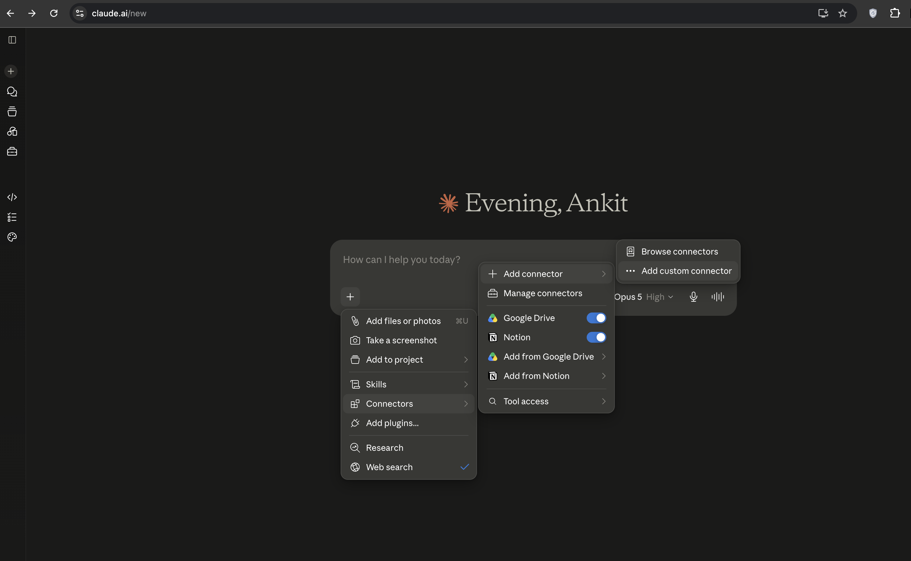
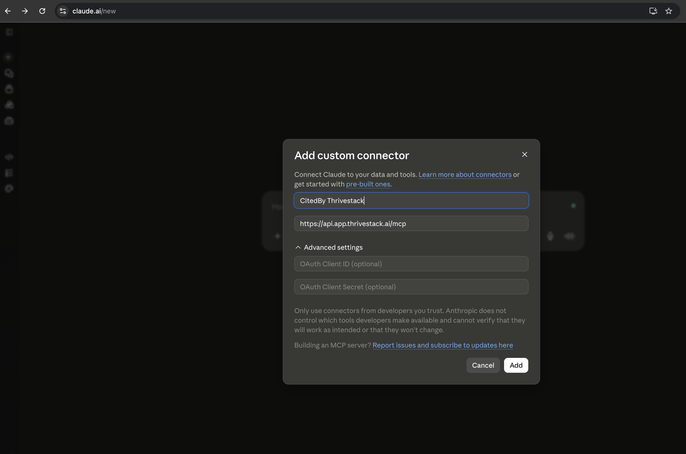
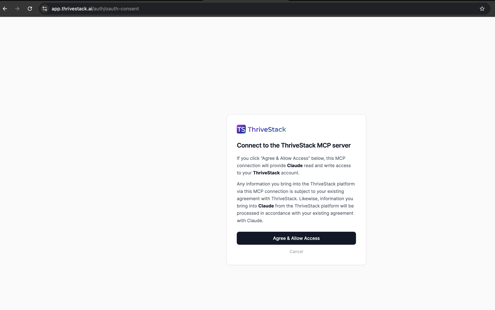
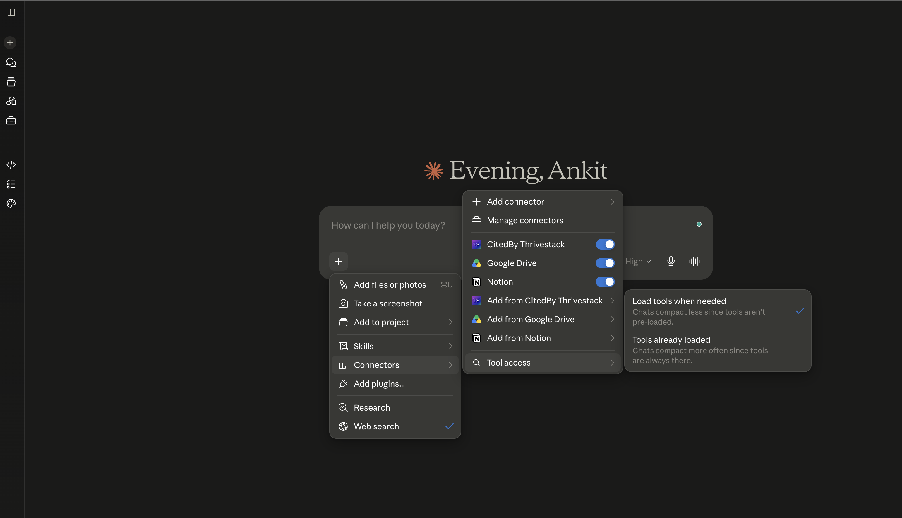

Setup Guide
Step-by-step instructions for connecting the ThriveStack MCP server to Claude, Cursor, and other AI tools. Stuck? Email support@thrivestack.ai.
Server URL
All platforms use the same URL:
| Endpoint | Value |
|---|---|
| Primary endpoint | https://api.app.thrivestack.ai/mcp |
Available to existing ThriveStack customers.
Authentication options
The server accepts two auth methods. Pick based on your client.
-
OAuth (recommended). The first connection redirects you to ThriveStack to sign in and approve access. Your session persists across conversations. Available for Claude / Claude Desktop and Claude Code (CLI) only.

1. In Claude, open the + menu → Connectors → Add custom connector.

2. Name it and enter
https://api.app.thrivestack.ai/mcp, then click Add.
3. Sign in and click Agree & Allow Access on the ThriveStack consent screen.

4. You’re connected — ThriveStack tools are now available in Claude.
- Personal Access Token (PAT). A long-lived token tied to your ThriveStack account, sent as an
Authorization: Bearerheader. It acts as you across every brand your account can access. This is the only option for Cursor, VS Code/Copilot, Windsurf, Gemini CLI, headless setups, CI, and any other client that doesn’t support OAuth — those clients don’t implement the OAuth flow, so a PAT is required, not just an alternative.
{kind=link}
{kind=link}
{kind=link}
{kind=link}
Create a Personal Access Token
Open the tokens page
Sign in to app.thrivestack.ai and go to AI Visibility → Settings → Personal Access Tokens (or click “Personal access tokens” from the Connect via MCP page).
Generate a token
Click Generate new token, give it a name (e.g. “Claude Desktop”, “Cursor laptop”) so you can tell your tokens apart later, and pick an expiry.
Copy the token
Copy it immediately — it’s shown only once, as a value starting with tsmcp_. Treat it like a password: anyone with it can act as you across every brand your account can access.
A token acts on your account, so every call respects the same permissions as your dashboard session. Revoke a token any time from Personal Access Tokens; clients using it lose access immediately.
Implementation instructions
Configure your MCP client to connect to
https://api.app.thrivestack.ai/mcp, then authenticate with OAuth (Claude / Claude Code only) or a Personal Access Token as described above.
Claude Desktop and Web (claude.ai)
For general MCP connector setup, refer to Claude Desktop MCP servers documentation.
Option A: OAuth (recommended)
The ThriveStack connector isn’t published in Claude’s connector directory yet, so you’ll add it as a custom connector:
Open settings
Open Claude Desktop (or claude.ai) and go to Settings or Customize (gear icon), then Connectors.
Add a custom connector
Click Add custom connector and enter a name and the server URL — there’s no listing to search for yet:
- Name: Thrivestack
- URL:
https://api.app.thrivestack.ai/mcp
Authorize
Click Connect. You’ll be redirected to ThriveStack to sign in. Once authorized, return to Claude Desktop.
Only workspace admins in Claude can add a custom connector. If you’re not able to, check with your admin.
Once connected, start asking questions — ThriveStack tools will be available in MCP mode.
Option B: Personal Access Token
Add this to
~/Library/Application Support/Claude/claude_desktop_config.json,
replacing YOUR_PAT_TOKEN with a token from
Personal Access Tokens:
{
"mcpServers": {
"thrivestack": {
"command": "npx",
"args": [
"-y", "mcp-remote", "https://api.app.thrivestack.ai/mcp",
"--header", "Authorization: Bearer YOUR_PAT_TOKEN"
]
}
}
}Claude Code (CLI)
For general MCP setup, refer to Claude Code MCP documentation.
Option A: OAuth (recommended)
claude mcp add --transport http --scope user Thrivestack "https://api.app.thrivestack.ai/mcp"Run this once, then start claude and type /mcp to sign in.
Option B: Personal Access Token
Replace YOUR_PAT_TOKEN with a token from Personal Access Tokens:
claude mcp add --transport http --scope user Thrivestack "https://api.app.thrivestack.ai/mcp" --header "Authorization: Bearer YOUR_PAT_TOKEN"Then start Claude Code:
claudeCursor
ThriveStack OAuth is currently available for Claude and Claude Code only — connect Cursor with a Personal Access Token. For general MCP setup, refer to Cursor's MCP documentation.
- Open Cursor Settings, then go to Tools & Integrations > MCP.
-
Click Add Custom MCP and add the ThriveStack MCP configuration, replacing
YOUR_PAT_TOKEN:JSON{ "mcpServers": { "thrivestack": { "url": "https://api.app.thrivestack.ai/mcp", "headers": { "Authorization": "Bearer YOUR_PAT_TOKEN" } } } } - Select Streamable HTTP as the transport type.
VS Code (GitHub Copilot)
ThriveStack OAuth is currently available for Claude and Claude Code only — connect VS Code with a Personal Access Token.
Create .vscode/mcp.json in your project (or open the user-level config via the MCP: Open User Configuration command), replacing YOUR_PAT_TOKEN:
{
"servers": {
"thrivestack": {
"type": "http",
"url": "https://api.app.thrivestack.ai/mcp",
"headers": { "Authorization": "Bearer YOUR_PAT_TOKEN" }
}
}
}Windsurf
ThriveStack OAuth is currently available for Claude and Claude Code only — connect Windsurf with a Personal Access Token.
- Open Windsurf Settings, then go to MCP.
-
Click Add Server and add the ThriveStack MCP configuration, using the same config as Cursor, replacing
YOUR_PAT_TOKEN:MCP config{ "mcpServers": { "thrivestack": { "url": "https://api.app.thrivestack.ai/mcp", "headers": { "Authorization": "Bearer YOUR_PAT_TOKEN" } } } }
Gemini CLI
ThriveStack OAuth is currently available for Claude and Claude Code only — connect Gemini CLI with a Personal Access Token. For general MCP setup, refer to Gemini CLI MCP server documentation.
-
Add this to your
~/.gemini/settings.json, replacingYOUR_PAT_TOKEN:~/.gemini/settings.json{ "mcpServers": { "thrivestack": { "httpUrl": "https://api.app.thrivestack.ai/mcp", "headers": { "Authorization": "Bearer YOUR_PAT_TOKEN" } } } } - Restart Gemini CLI to load the MCP server.
Other MCP clients
The ThriveStack MCP server uses Streamable HTTP transport and works with any AI tool that supports the MCP standard. Configure the
client to connect to
https://api.app.thrivestack.ai/mcp. If the client doesn’t support OAuth (currently Claude and Claude Code only), attach
a Personal Access Token as an
Authorization: Bearer YOUR_PAT_TOKEN header.
- Configure your client's MCP server URL to
https://api.app.thrivestack.ai/mcp. - Ensure your client supports custom HTTP headers and set
AuthorizationtoBearer YOUR_PAT_TOKEN. - Authenticate/connect when prompted (if your client asks for it).
- Start using ThriveStack tools in MCP mode.
Verify your connection
After setup, try asking your AI assistant:
“Is our ThriveStack setup finished, and what’s still pending?”
You should get a status response back. If that works, you’re all set. From here:
Troubleshooting
“Authorization failed” or “Unauthorized”
- Check that you signed in with the correct ThriveStack account.
- Try removing and re-adding the integration.
- Clear your browser cookies for
app.thrivestack.aiand try again. - Using a Personal Access Token? Confirm it hasn’t been revoked under Personal Access Tokens, and that the
Authorization: Bearerheader is being sent.
Other issues
- Missing data: ensure your ThriveStack account has access to the target product/environment and the data actually exists.
- Tool not found: tool availability depends on what your MCP server version exposes.
- Queries timing out: try smaller questions or narrower date ranges.
- Connection timeout: check your internet connection, and make sure the URL is exactly
https://api.app.thrivestack.ai/mcp.
Need help? Email support@thrivestack.ai.
Technical specifications
- Transport Type: Streamable HTTP (Remote)
- Authentication: OAuth 2.1 (Claude and Claude Code only) or a Personal Access Token via
Authorization: Bearerheader (any client)